Drocella
MUSABYIMANA
Executive Director
Understands environmental policy with 4 years experience in research and implementation across East Africa.
Founded in 2022, CIAC Rwanda is dedicated to environmental stewardship and institutional credibility, fostering a greener future for our nation.

KIGALI, RWANDA
CIAC Rwanda emerged in June 2022 from a collective vision in Kigali. We recognized an urgent need for a professional institutional bridge between global environmental standards and local sustainable practices.
Our journey began with a small team of passionate environmentalists and policy experts committed to transforming Rwanda's ecological landscape. Today, we stand as a beacon of institutional credibility, working hand-in-hand with communities and stakeholders.
We believe that true stewardship is not just about conservation; it's about building the frameworks that allow nature and humanity to thrive in harmony for generations to come.
To implement world-class sustainable frameworks through rigorous research, advocacy, and community-led environmental stewardship across Rwanda.
To implement world-class sustainable frameworks through rigorous research, advocacy, and community-led environmental stewardship across Rwanda.
To implement world-class sustainable frameworks through rigorous research, advocacy, and community-led environmental stewardship across Rwanda.
Our founders are passionate young innovators driven by a shared vision to use technology for social and environmental impact. With backgrounds in problem-solving leadership, and digital creation, they come together to build practical solutions that empower communities, support farmers, and promote sustainable growth.
Understands environmental policy with 4 years experience in research and implementation across East Africa.

Ensuring institutional credibility through meticulous financial stewardship and transparent reporting.

Driving digital transformation and managing technical infrastructure to support our nationwide interventions.

Specializing in ecosystem restoration and community-led reforestation for people towards climate resilience.
From the rolling hills of the North to the vibrant plains of the East, our operations span all 30 districts. We deploy localized solutions that respect the unique ecological needs of every province.

Your support helps us bridge the gap between vision and ecological reality. Together, we can build a sustainable future.